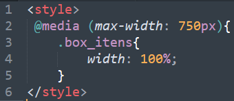

O que são Media Queries
Media queries são instruções inseridas dentro do CSS que ao serem atendidas podem desencadear ações preestabelecias. As medias queries possibilitam uma gama de atividades e configurações dinâmicas do seu layout. Basicamente inserimos uma instrução condicional que, ao ser atendida, executa um bloco de instruções.
O exemplo mais direto que podemos abordar é na criação de layouts responsivos. Podemos criar um layout que ao ser redimencionado para "x" largura recebe um estilo projetado para aquela resolução em específico.
Voltar ao topo!Quando devo utilizar?
Quando existir a necessidade da renderização de seu projeto em contextos diferentes.
Voltar ao topo!CSS @media Rule
Para acessar o guia de regras de utilização exemplos e mais consulte o site w3schools. Nesse link você vai encontrar:
- Definição da sintaxe
- Tipos de @media
- Seletores de condição
- Exemplos e mais
Um pequeno exemplo

Esse pequeno trecho de código que quando a resolução da janela estiver inferior ou igual a 600px essa instrução CSS será interpretada.
O @media define o início da instrução. A informação em parêntese representa a instrução condicional que caso atendida executa o bloco de código.
Voltar ao topo!Operadores
É possível compor as media queries utilizando operadores lógicos para criação de instruções mais complexas. Pode-se utilizar os operadores "not", "and" e "only".
Not
A instrução not processar uma query caso sua instrução condicional não seja atendida. Pegando o mesmo exemplo anterior. Temos uma condição para quando a página fique em uma resolução inferior a 600px. Caso queira efetuar o contrário, podemos escrever a query da seguinte maneira
@media not all and (max-width: 600px){ ... Instruções ... }
And
O operador "and" combina várias condições em uma mesma media query. Onde todas as condições devem ser atendidas para que a query surta efeito. Por exemplo:
@media (max-width: 600px) and (max-height: 200px){ ... Instruções ... }
Only
Pode-se utilizar a instrução only para evitar que navegadores antigos que não possuem suporte a midia query tente renderizar suas instruções. Ao utilizar esse operador sua expressão ficaria da seguinte maneira:
@media only screen and (max-width: 600px){ ... Instruções ... }